Servlet API
Servlet API 由两个重要的包组成，它们封装了所有重要的类和接口，即:
- javax.servlet
- javax.servlet.http
javax.servlet的一些重要类和接口
| 接口 | 班 | | 小型应用 | ServletInputStream | | ServletContext | 对象 | | servletconfig | ServletRequestWrapper | | ServletRequest | ServletResponseWrapper | | ServletResponse | ServletRequestEvent | | 监听器 | ServletContextEvent | | 请求调度器 | servletrequestartributeevent | | 接口 | ServletContextAttributeEvent | | 过滤器 | servlet 异常 | | 对象 | 不可用异常 | | 过滤链 | 父类 | | ServletRequestListener | |
javax.servlet.http的一些重要类和接口
| 类和接口 | | HttpServlet | HttpServletRequest | | httpservletresponse-http servlet 回应 | HttpSessionAttributeListener | | 会话 | HttpSessionListener | | 饼干 | HttpSessionEvent |
Servlet 接口
在 Java 中，一个接口用于开发 servlet。这个接口被称为 servlet 接口。该接口由所有接口实现。servlet 接口用于 init()、service()和 destroy()方法的声明。服务器在 servlet 的生命周期中调用这些方法。servlet 调用 getServletConfig()方法来初始化参数。getServletInfo()方法用于提供重要信息。
Servlet 接口只提供了五种方法。这五种方法中，三种是 Servlet 生命周期方法，其余两种是非生命周期方法。
声明:
公共接口 Servlet
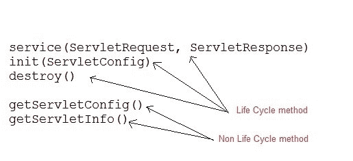
Servlet 接口的方法
| 没有。 | 方法 | 描述 | | 1. | 公共 void init(ServletConfigconfig) | 它用于初始化 servlet。在 servlet 生命周期中，web 容器只调用它一次。 | | 2. | public void service(servletrequesteq，ServletResponse res) | 它用于对所有传入的请求提供响应。web 容器每次为每个请求调用它。 | | 3. | 公开作废销毁() | 它用于销毁 servlet。它在 servlet 的生命周期中只被调用一次。 | | 4. | public servlet configgetservletconfig() | 用于获取 ServletConfig 的对象。 | | 5. | 公共字符串 getServletInfo() | 它用于获取关于 servlet 的作者、版权等信息。 |
Eclipse 上的 Servlet 接口示例
为了创建 servlet 接口，下面是程序的目录结构:
以下是创建程序的步骤。
第一步:通过点击文件= >新建= >动态网页项目在 eclipse 上创建一个动态项目

第二步:现在创建一个 HTML 文件。
右键单击项目，然后单击 HTML 文件。给出文件名，然后点击完成按钮。

并写出下面的代码。
Index.html
<!DOCTYPE html>
<html>
<head>
<meta charset="ISO-8859-1">
<title>studytonight => servlet interface example</title>
</head>
<body>
<h1>studytonight.com</h1><br><br>
************************************<br><br>
<h3><a href="demo">Click here to proceed...</a></h3><br><br>
************************************<br><br>
</body>
</html>
第三步:现在在 web.xml 文件中添加下面的代码。
web.xml 文件是一个部署描述符。这里有所有的配置。
<?xmlversion="1.0"encoding="UTF-8"?>
<web-appxmlns:xsi="http://www.w3.org/2001/XMLSchema-instance"xsi:schemaLocation="http://xmlns.jcp.org/xml/ns/javaee http://xmlns.jcp.org/xml/ns/javaee/web-app_4_0.xsd"id="WebApp_ID"version="4.0">
<servlet>
<servlet-name>abc</servlet-name>
<servlet-class>DemoServlet</servlet-class>
</servlet>
<servlet-mapping>
<servlet-name>abc</servlet-name>
<url-pattern>/demo</url-pattern>
</servlet-mapping>
</web-app>
步骤 4:现在接下来创建一个 servlet。为此创建一个类。给出包名和类名。
 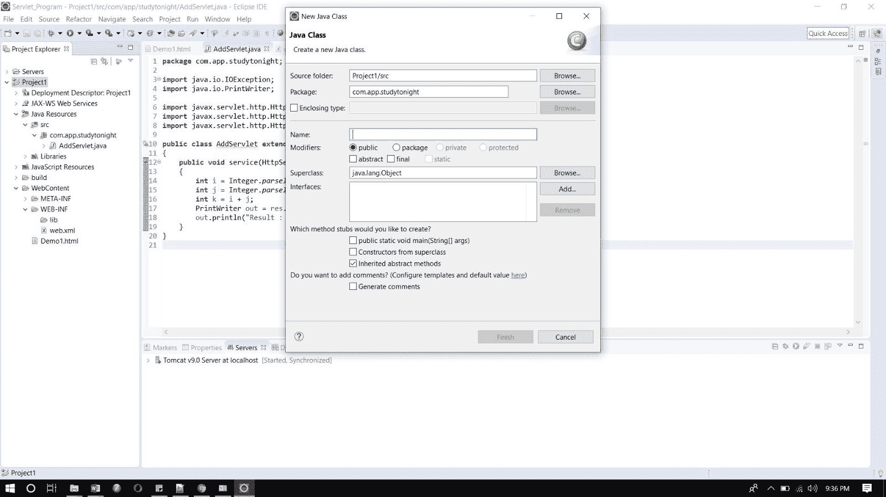
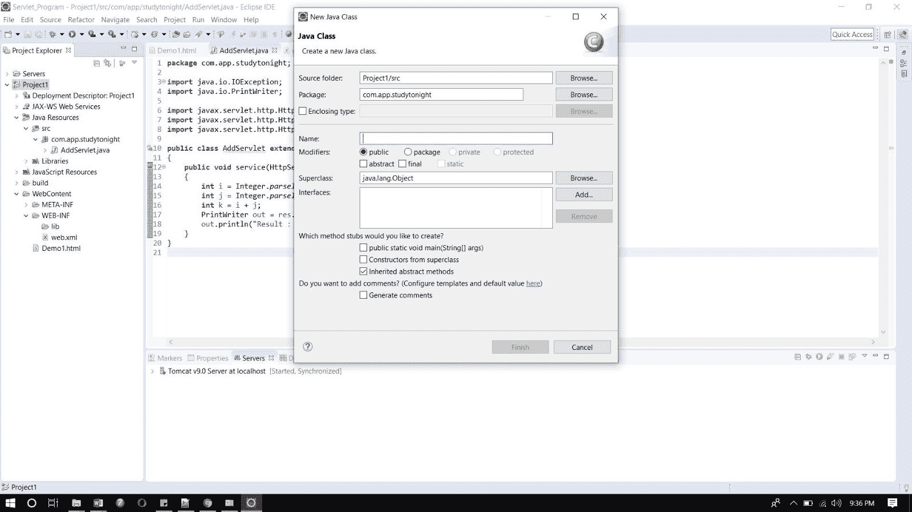
现在在类文件中添加下面的代码。
DemoServlet.java
import java.io.*;
import javax.servlet.*;
public class DemoServlet implements Servlet{
ServletConfig config=null;
public void init(ServletConfig config){
this.config=config;
}
public void service(ServletRequest req,ServletResponse res)
throws IOException,ServletException{
res.setContentType("text/html");
PrintWriter pwriter=res.getWriter();
pwriter.print("<html>");
pwriter.print("<body>");
pwriter.print("<h1>Hello Welcome to studytonight. This example is of servlet interface. </h1>");
pwriter.print("</body>");
pwriter.print("</html>");
}
public void destroy(){
System.out.println("servlet destroy");
}
public ServletConfig getServletConfig(){
return config;
}
public String getServletInfo(){
return "studytonight.com";
}
}
现在，运行代码。
要运行代码，右键单击项目并选择运行方式= >在服务器上运行。
下面是 index.html 页面。点击链接登陆 servlet 页面。
这是 servlet 页面。
HttpServlet 类
HttpServlet 也是一个抽象类。这个类给出了 Servlet 接口的各种service()方法的实现。
为了创建一个 servlet，我们应该创建一个扩展 HttpServlet 抽象类的类。我们将要创建的 Servlet 类不能覆盖service()方法。我们的 servlet 类将只覆盖doGet()和/或doPost()方法。
HttpServlet 类的service()方法监听请求流中的 Http 方法(GET、POST 等)，并基于 Http 方法类型调用doGet()或doPost()方法。
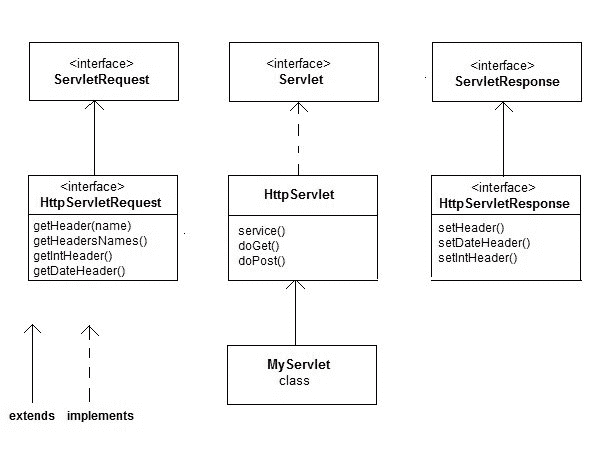
HttpServlet 接口的方法
| 没有。 | 方法 | 描述 | | one | 公共作废服务(ServletRequest，ServletResponse res) | 它通过创建请求和响应对象来保护服务方法。 | | Two | 受保护的无效服务(HttpServletRequest 请求，HttpServletResponse res) | 它用于接收服务方法。 | | three | protected void doet(http servletrequest req，HttpServletResponse res) | 它由 web 容器调用，用于处理 GET 请求。 | | four | protected void dopost(http servletrequest req，HttpServletResponse res) | 它由 web 容器调用，并处理 POST 请求。 | | five | protected void dohead(http servletrequest req，HttpServletResponse res) | 它由 web 容器调用，并处理 HEAD 请求。 | | six | protected void doooptions(http servletrequest req，HttpServletResponse res) | 它由 web 容器调用，并处理 OPTIONS 请求。 | | seven | protected void doput(http servletrequest req，HttpServletResponse res) | 它由 web 容器调用，并处理 OPTIONS 请求。 | | eight | protected void dotrace(http servletrequest req，HttpServletResponse res) | 它由 web 容器调用，并处理 TRACE 请求 | | nine | protected void doelete(http servletrequest req，HttpServletResponse res) | 它由 web 容器调用，并处理 DELETE 请求。 | | Ten | 受保护长 getlastpmodified(HttpServletrequest 请求) | 它用于获取上次修改 HttpServletRequest 的时间。 |
Eclipse 上的 HttpServlet 类示例
为了创建一个 HttpServlet 类，下面是程序的目录结构:
以下是创建程序的步骤。
第一步:通过点击文件= >新建= >动态网页项目在 eclipse 上创建一个动态项目
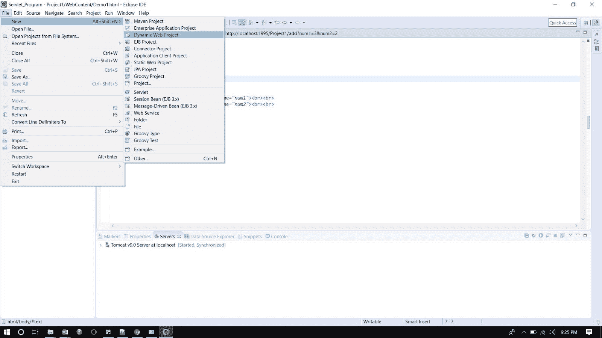
第二步:现在创建一个 HTML 文件。
右键单击项目，然后单击 HTML 文件。给出文件名，然后点击完成按钮。
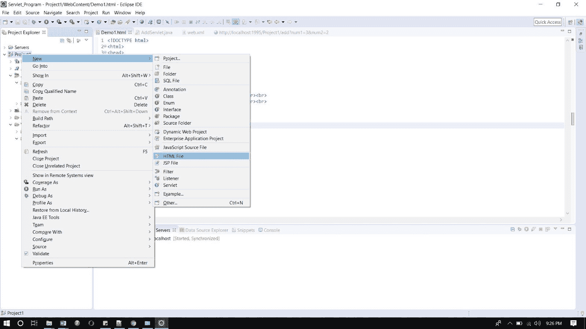
并写出下面的代码。
Demo.html
<!DOCTYPE html>
<html>
<head>
<meta charset="ISO-8859-1">
<title>Insert title here</title>
</head>
<body>
<form action="mar" align="center">
<h3 align="center">studytonight.com</h3>
<h3 align="center">--------------------------------------------------------</h3>
Enter marks of the following subjects<br><br><br>
Maths : <input type="text" name="num1"><br><br>
English : <input type="text" name="num2"><br><br>
Hindi : <input type="text" name="num3"><br><br>
Science : <input type="text" name="num4"><br><br>
Social Science : <input type="text" name="num5"><br><br>
IT : <input type="text" name="num6"><br><br>
<input type="submit">
</form>
</body>
</html>
第三步:现在在 web.xml 文件中添加下面的代码。
web.xml 文件是一个部署描述符。这里有所有的配置。
<?xml version="1.0" encoding="UTF-8"?>
<web-app xmlns:xsi="http://www.w3.org/2001/XMLSchema-instance" xsi:schemaLocation="http://xmlns.jcp.org/xml/ns/javaee http://xmlns.jcp.org/xml/ns/javaee/web-app_4_0.xsd" id="WebApp_ID" version="4.0">
< <servlet>
<servlet-name>abc2</servlet-name>
<servlet-class>marks</servlet-class>
</servlet>
<servlet-mapping>
<servlet-name>abc2</servlet-name>
<url-pattern>/mar</url-pattern>
</servlet-mapping>
</web-app>
步骤 4:现在接下来创建一个 servlet。为此创建一个类。给出包名和类名。
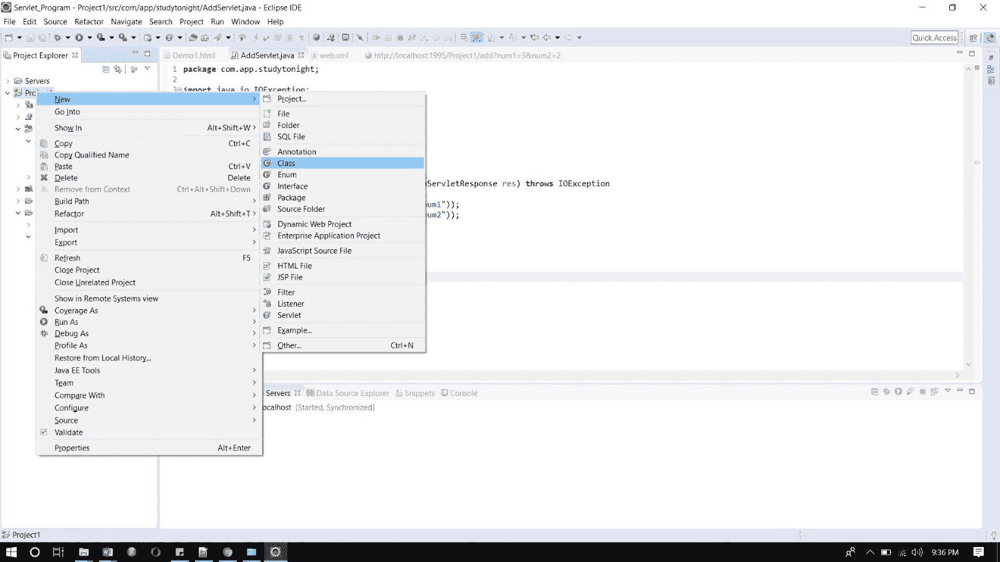

在类文件中添加下面的代码。
marks.java
import java.io.IOException;
import java.io.PrintWriter;
import javax.servlet.ServletException;
import javax.servlet.ServletRequest;
import javax.servlet.ServletResponse;
import javax.servlet.http.HttpServlet;
public class marks extends HttpServlet{
public void service(ServletRequest req, ServletResponse res) throws IOException, ServletException
{
int i = Integer.parseInt(req.getParameter("num1"));
int j = Integer.parseInt(req.getParameter("num2"));
int k = Integer.parseInt(req.getParameter("num3"));
int l = Integer.parseInt(req.getParameter("num4"));
int m = Integer.parseInt(req.getParameter("num5"));
int n = Integer.parseInt(req.getParameter("num6"));
int total = i + j + k + l + m + n;
float avg = total / 6;
PrintWriter out = res.getWriter();
out.println("Maths : " + i );
out.println("English : " + j );
out.println("Hindi : " + k);
out.println("Science : " + l);
out.println("Social Science : " + m);
out.println("IT : " + n);
out.println("Total Marks : "+ total);
out.println("Average: "+avg);
}
}
现在，运行代码。
要运行代码，右键单击项目并选择运行方式= >在服务器上运行。
下面是 index.html 页面。点击链接登陆 servlet 页面。
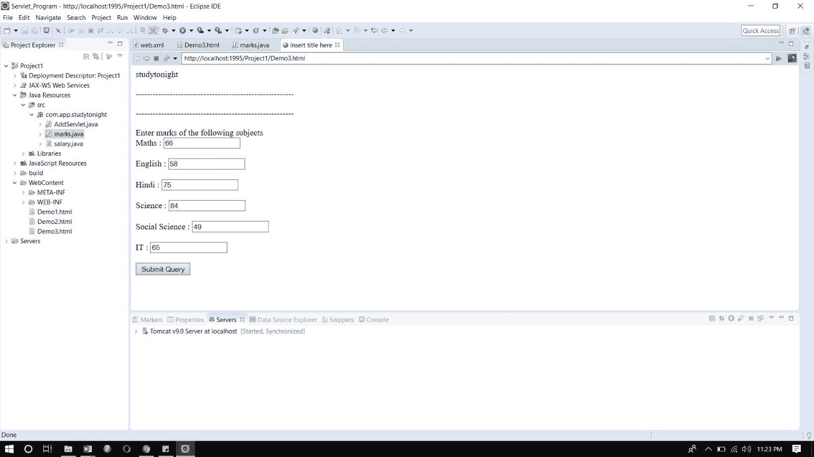
这是 servlet 页面。
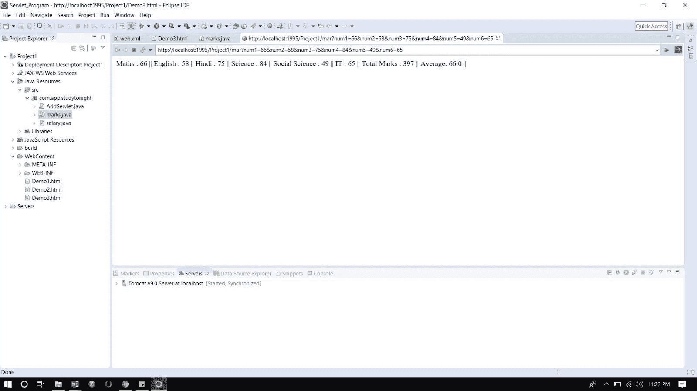
GenericServlet 类
在 Servlet 中，GenericServlet 是一个抽象类。这个类实现了 servlet、ServletConfig 和 Serializable 接口。这个类提供了大多数基本 servlet 方法的实现。这个类的协议是独立的，因为它可以处理任何类型的请求。
级:

泛型 Servlet 接口的方法
实现的接口:
java.io.Serializable、Servlet、ServletConfig
施工方:
GenericServlet():此构造器不执行任何操作。一切都由 init 方法初始化。
| 没有 | 方法 | 说明 | | one | 公共 void init(ServletConfig 配置) | 它用于 servlet 的初始化。 | | Two | 公共抽象 void 服务(ServletRequest 请求，ServletResponse 响应) | 它用于为传入的请求提供所有服务。当用户请求时，只有它调用。 | | three | 公开作废销毁() | 它用于销毁 servlet。它在 servlet 的生命周期中只被调用一次。 | | four | public servlet config getservletconfig() | 用于获取 ServletConfig 的对象 | | five | 公共字符串 getServletInfo() | 它用于获取关于 servlet 的作者、版权等信息。 | | six | 公共 void init() | 对于程序员来说，这是一个非常简单方便的方法。 | | seven | public servlet context getservletcontext() | 它用于获取 servlet 的对象 | | eight | 公共字符串 getInitParameter(字符串名称) | 它用于从给定的参数名称中获取所有参数值。 | | nine | 公共枚举 getInitParameterNames() | 它用于获取在 web.xml 文件中定义的参数 | | Ten | public String getServletName() | 它用于获取 servlet 对象的名称。 | | Eleven | 公共作废日志(字符串消息) | 它用于在 servlet 日志文件中写入消息。 | | Twelve | 公共无效日志(字符串消息，可抛出测试) | 它用于在 servlet 日志文件和栈跟踪中写入消息。 |
Eclipse 上的泛型 Servlet 接口示例
为了创建 GenericServlet 类，下面是程序的目录结构:
以下是创建程序的步骤
第一步:通过点击文件= >新建= >动态网页项目在 eclipse 上创建一个动态项目
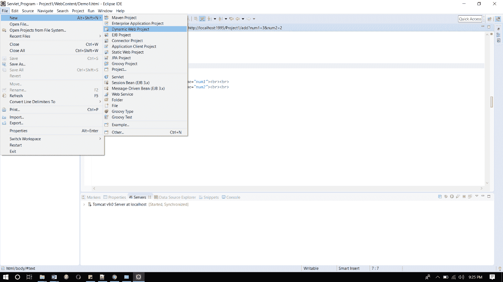
第二步:现在创建一个 HTML 文件。
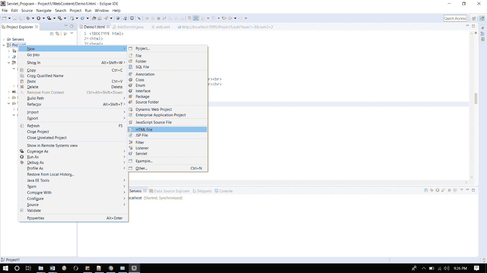
并写出下面的代码。
演示 2.html
<!DOCTYPE html>
<html>
<head>
<meta charset="ISO-8859-1">
<title>Studytonight.com</title>
</head>
<body>
<form action="sal" align="center">
<h3 align="center">studytonight.com</h3>
<h3 align="center">--------------------------------------------------------</h3><br><br>
Enter Basic Salary <input type="text" name="num1"><br><br>
Enter Basic DA <input type="text" name="num2"><br><br>
Enter Basic HRA <input type="text" name="num3"><br><br>
<input type="submit">
</form>
</body>
</html>
第三步:现在在 web.xml 文件中添加下面的代码。
web.xml 文件是一个部署描述符。这里有所有的配置。
<?xml version="1.0" encoding="UTF-8"?>
<web-app xmlns:xsi="http://www.w3.org/2001/XMLSchema-instance" xsi:schemaLocation="http://xmlns.jcp.org/xml/ns/javaee http://xmlns.jcp.org/xml/ns/javaee/web-app_4_0.xsd" id="WebApp_ID" version="4.0">
<display-name>Generic_Servlet</display-name>
<servlet>
<servlet-name>abc1</servlet-name>
<servlet-class>salary</servlet-class>
</servlet>
<servlet-mapping>
<servlet-name>abc1</servlet-name>
<url-pattern>/sal</url-pattern>
</servlet-mapping>
</web-app>
步骤 4:现在接下来创建一个 servlet。为此创建一个类。给出包名和类名。


在类文件中添加下面的代码。
salary.java
import java.io.IOException;
import java.io.PrintWriter;
import javax.servlet.GenericServlet;
import javax.servlet.ServletException;
import javax.servlet.ServletRequest;
import javax.servlet.ServletResponse;
public class salary extends GenericServlet
{
/**
*
*/
private static final long serialVersionUID = 1L;
public void service(ServletRequest req, ServletResponse res) throws IOException, ServletException
{
int i = Integer.parseInt(req.getParameter("num1"));
int j = Integer.parseInt(req.getParameter("num2"));
int k = Integer.parseInt(req.getParameter("num3"));
int da = (j * i) / 100;
int hra = (k * i) / 100;
int g = i + da + hra;
PrintWriter out = res.getWriter();
out.println("studytonight.com");
out.println("DA : "+da);
out.println("HRA : "+hra);
out.println("Gross Salary : "+g);
}
}
现在，运行代码。
要运行代码，右键单击项目并选择运行方式= >在服务器上运行。
下面是 demo2.html 页面。点击链接登陆 servlet 页面。
这是 servlet 页面。
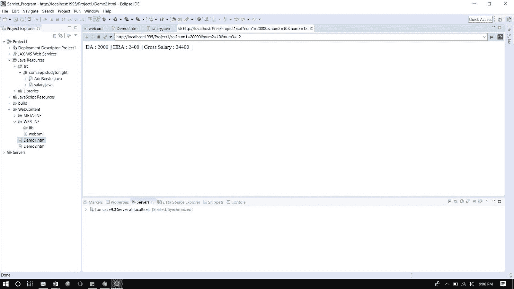